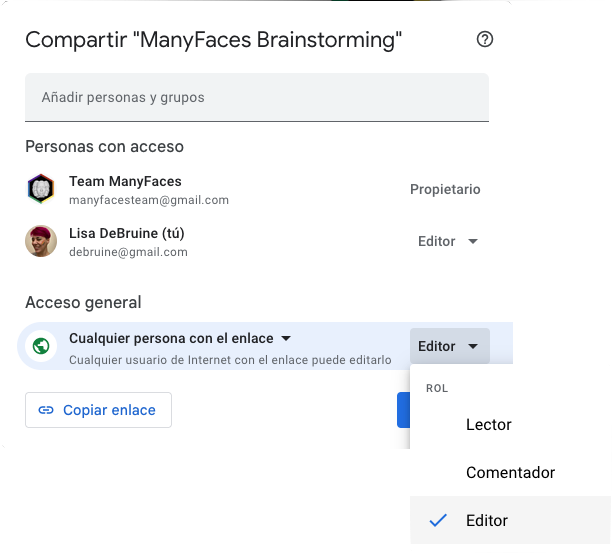
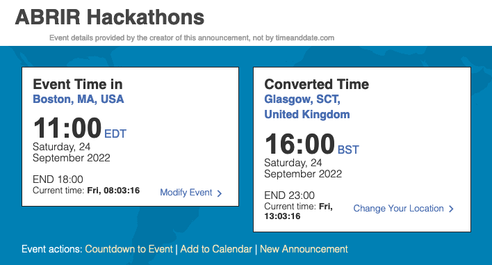

9 Herramientas para la Colaboración
La ciencia inclusiva de equipos colaborativos generalmente produce productos científicos como planes de registro, conjuntos de datos, códigos de análisis y manuscritos. Necesitarás una forma para dar seguimiento y organizar todo esto. Aquí están algunas de mis herramientas favoritas con las que puedes configurar cuentas para tus equipos.
Probablemente sea una buena idea configurar una dirección de correo electrónico para el grupo, de modo se pueda utilizar como correo electrónico de inicio de sesión para el resto de sus cuentas y pueda transferirse fácilmente cuando el liderazgo del equipo cambie.
9.1 Google
Documentos, hojas de cálculo y formularios en Google son formas útiles de colaborar en documentos con grandes grupos. La mayoría de las personas no tendrán problemas con el acceso.
Si alguien de tu grupo principal trabaja en una universidad donde puedan crear un Google [Drive Compartido] (https://support.google.com/a/users/answer/9310249), puede ser una buena forma de organizar tus documentos. Los/as miembros pueden ser agregados/as a la unidad compartida, y pueden crear documentos donde todas las personas tengan permiso predeterminado para editar.
Si no puedes crear una unidad compartida, puedes configurar una nueva cuenta de Google para tu equipo y guardar todos los documentos en una carpeta en esa cuenta Google Drive. Los documentos realizados por los/as miembros del equipo deberán dar permiso de editor/a a la cuenta del grupo. Puedes hacer documentos abiertos para que cualquier persona pueda editar, comentar o ver, o restringir el acceso solo a personas específicas.

9.2 Calendario
A medida que tu grupo crezca, necesitarás mantener un seguimiento de las reuniones y fechas de vencimiento. Un calendario de grupo puede ayudar con esto. Google Calendar es probablemente el más fácil de configurar, especialmente si ya has creado una cuenta de Google para el equipo.
Es probable que necesites organizar horas de reunión en diferentes zonas horarias. Elige un servicio como When2Meet que tiene buen soporte para las múltiples zonas horarias. Agregar reuniones a un calendario compartido ayuda a prevenir confusiones sobre en que zona horaria será esa reunión de las 3 pm.
Considera la posibilidad de vincular a Event Time Announcer cuando se anuncian eventos con una hora específica. Puedes rellenar un formulario que te proporcione un URL para vincular la hora de tu evento en un formato como el siguiente:

9.3 OSF
El Open Science Framework es un gran lugar para archivar tus documentos y otros materiales una vez que se terminó de colaborar en estos. Los proyectos tienen una estructura modular para que puedas dar derechos para editar a diferentes miembros del equipo en proyectos específicos o aspectos del proyecto.
Haz un proyecto para tu equipo. (Establece la ubicación de almacenamiento en Alemania si tu equipo tiene miembros europeos para que puedan guardar datos de invetsigación sin GDPR problems.) Crea un nuevo componente para cada proyecto y agrega a las personas que colaborarán adecuadas.
9.4 Zotero
Zotero es probablemente el mejor y gestor de referencias más abierto que existe. Puedes configurar una biblioteca compartida para tu grupo para que los/as miembros se puedan unir. Puedes utilizar esto como una forma de realizar seguimiento de los resultados del grupo o como gestor de referencias compartido para proyectos. Puedes configurar que la biblioteca sea totalmente privada o visible públicamente.
9.5 Github
Si tu grupo tendrá algún código abierto, incluyendo los scripts de análisis, deberás pensar en configurar una [organización de GitHub] gratuita (https://github.com/organizations/plan). Code Check Club es un buen ejemplo de una página de GitHub grupal.
GitHub también es un excelente lugar para alojar sitios web para su organización y cada proyecto que puedan tener (vea Section 10.4.1).
9.6 Zenodo
Zenodo es un repositorio de investigación que es ideal para dar DOIs a proyectos de codificación (tiene integración con GitHub). Nosotros usamos Zenodo para la serie de libros PsyTeachR. Puedes hacer una Comunidad en Zenodo para seleccionar los resultados de su organización.
9.7 STAPLE
(Updated in 2025)
Science Tracking Across the Project Lifespan is a project headed by Erin Buchanan of the Psychological Science Accelerator. STAPLE is being developed to be a science focused project management tool that not only helps with the unique challenges of project management of research but includes open and transparent documentation of data and metadata.